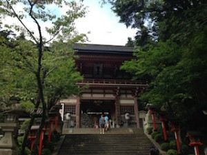
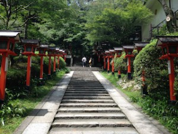
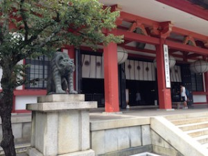
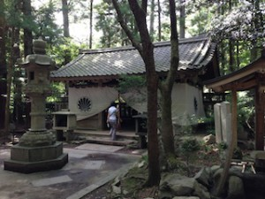
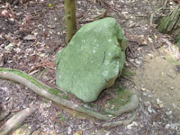
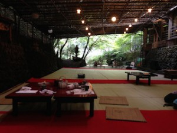
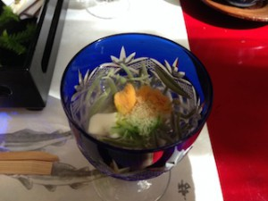
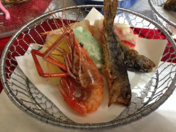
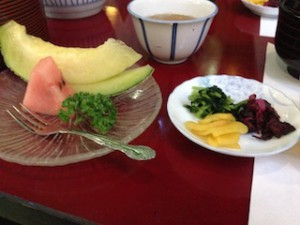

If you wish to have a day in nature in Kyoto, I recommend you visiting the area of Kurama and Kibune. You can enjoy visiting historical places and hiking in a mountain at the same time. I like this area. It is rather cool in the summer too.
How to get there:
First you go to Demachi Yanagi Station (出町柳駅), where you find the Eizan-dentetshu Line (叡山電鉄), and take the train bound for Kurama. You will arrive at the terminal, Kurama Station, after several stops, around 30 minutes.
I also suggest you take a Kurama and Kibune map given for free at Deamchi Yanagi Station or when you arrive at Kurama Station. It is very useful.
From Kurama Station, you walk a little, maybe one or two minutes, to get to Kurama-dera Temple. And there first you will find an impressive Niô-mon (Deva gate). This is the gate where we enter the sacred area from the secular world. Once you get in, you should behave! No short-pants, no beach sandals!

After passing Niô-mon, you have two ways to reach the main hall of Kurama-dera, which stands halfway up the mountain. If you are determined to use your own legs, take the way on the left, and if you want to save your energy for later, turn to the right after the gate and take the cable car. This cable car is officially called Kurama-yama Kôsaku Railway, and operated by Kurama-dera. It is the shortest railway in Japan (191m), and the only one operated by a religious corporation. All staff are wearing “Samue”. “Samue” is a garment that a zen monk wears when he performs sami, or duties such as daily sutra chanting and the cleaning of the precincts of the temple.

After the shortcut, you still have to go up the mountain to get to Kurama-dera Kondô (the main hall).
Kurama-dera Temple (the main hall):
In 770, Kurama-dera Temple was founded in the middle of the south slope of Mt. Kurama, with Bishamonten (Vaisravana) as the principal object of worship. It is protecting the north-side of Kyoto. It is also known as a power spot. You can get spiritual power there! Look at this tiger! They are the messengers of Bishamonten.


Ushiwakamaru:
Another interesting story relating to this temple is Ushiwakamaru. It is the childhood name of Minamoto no Yoshitsune. Minamoto no Yoshitsune is a younger brother of Minamoto no Yoritomo, who established the Kamakura Shogunate in 1192. There is a long story between these two brothers.
・1156 Hogen Rebellion: This is a dispute about Japanese Imperial succession (Emperor Goshirakawa vs Retired Emperor Sutoku). The Minamoto clan and the Taira clan supported Emperor Goshirakawa, and these two families were gaining power in politics in Japan.
・1160 Heiji Rebellion: This is another civil war in order to resolve a dispute about political power (Retired Goshirakawa vs Emperor Nijo). But this time, the Taira clan was for Retired Goshirakawa, and the Minamoto clan sided with Emperor Nijo. The result was prosperity of the Taira family.
In Heiji Rebellion, Yoshitsune’s father, Minamoto no Yoshitomo, died, and Yoshitsune was sent to Kuramadera temple, where he trained hard and mastered the art of war.
After that, he visited Hiraizumi, in the present-day Iwate prefecture, and the Ôshû Fujiwara clan patronized him.
Losing the battle against the Taira clan, the Minamoto clan was preparing to take revenge. The eldest son, Minamoto no Yoritomo, started to attack the Taira soldiers and finally defeated the family after some famous battles, like Ichi no Tani, Yashima, and Dan no Ura battle (see the page Shimonoseki). And the person who had given the most distinguished service in these battles was no other than Minamoto no Yoshitsune. Actually he was supposed to listen to Yoritomo, but he acted arbitrarily during and after these battles. Yoritomo was not happy about this because he thought his status might be threatened later by his competent younger brother.
Considered as a rebel, Yoshitsune again visited the Ôshû Fjiwara family and asked for help. The family head of the Ôshû Fjiwara, Fujiwara no Hidehira, supported Yoshitsune, because he didn’t like Yoritomo’s ruling power reaching the Ôshû Region. But he soon fell sick and died. After Hidehira, it was Yashuhira who took over as the head of the family. Yashuhira was, then, ordered by Yoritomo and put under big pressure to arrest Yoshitsune. Yoshitsune gave up fighting and killed his wife and child, and then himself.
This is one of the most popular stories in Japanese history.
Yoshitsune also has a lot of legendary stories too. Like, he actually survived and traveled to as far as Hokkaido, and there he met the Ainu people and planned to re-attack the Kamakura Shogunate together. Or he became Genghis Khan after crossing the sea…
It is also said that it was a Tengu who taught him the art of war at Kurama-dera temple. Tengu is a legendary creature found in Japanese folk religion and is also considered a Shinto god or a yôkai (supernatural creature).
{kind=link}
From the main hall, a long long mountain pass continues. You need good shoes.
It is the mountain where Yoshitsune was training! Not so easy. Even he needed to take a rest. This is the water welling from the mountain. Yoshitsune had some when he wanted to refresh himself.

The stone behind the wooden fence is called “Sekurabe Ishi.” It is said that Yoshitsune measured himself with this stone before leaving Mt. Kurama.

Fudô-dô: There is a hall dedicated to Fudo Myo-ô (a Buddhist god). And it is said that this is the spot where Ushiwakamaru met a Tengu.

Walk walk walk …. and walk in the mountain. This pass is called “Ki no ne no Michi.” It means the pass of tree roots.
{kind=link}
{kind=link}
Maô-den: This is a small shrine on top of an oddly shaped rock. It is said that 6,500,000 years ago Maô-son arrived on Earth from Venus. Maô-son is one of the Soten, and the Sonten means the triune god including Vaisravana, Saharabhuja and Goho Maô-son. Its body is formed from elements different from those human beings have, and it is in an eternal existence at the age of 16 and it doesn’t age.

There are some rocks on the ground by this shrine. They say Yoshitsune was training here with a sword. Do you see the cuts he left on the rocks?

From here, you keep going down the mountain… It is very hard too!
I think it is about 1 to 2 hours to do this hiking, and you should start from Kurama, not from Kibune. From Kibune, it is too steep to go up the mountain. And another good thing to start hiking from Kurama is that at Kibune there are many traditional restaurants. They are so popular during the summer that you may not be able to find a table (otherwise you make a reservation in advance). But if you arrive there after 2 o’clock you can relax and enjoy lunch rather quietly. I’ll show you some photos later in this page.
Anyway when you reach the Kibune-gawa River, you may find your legs shaking… Mine were shaking! But a little more effort to see Kifune-jinja shrine.
Kifune-jinja Shrine:
Although the area name is Kibune (貴船), this shrine name is pronounced “Kifune” (貴船) to show pureness and respect the god of water, Okamino-kami. The god is believed to bring rain. When people needed the sun, they offered a white horse, and when they needed rain, they offered a dark horse. And with the times, a horse drawn on the wooden plate came to be used as an offering, which is today known as “Ema.” This shrine is said to be the origin of “Ema.”

Kibune-jinja is also worshiped as the god of marriage, very popular among young couples and women. But on the other hand, it is also believed as the god of separation. The god curses a person you want to separate from. If you wish so, you have to do “Ushi no Koku Mairi“: you place a curse on someone by nailing a doll representing him or her to a tree between the hours of 1 am and 3 am. But according to the shrine, Ushi no Koku Mairi is not for cursing, but for making a wish.
By the way, Ushi no Koku means the hour of cow. Kifune Myojin arrived at Mt. Kifune at the hour of cow, the day of cow, the month of cow and the year of cow.
{kind=link}
The foundation date of Kifune-jinja is not known, but according to the shrine, Tamayori-hime no Mikoto, the mother of Emperor Jinmu ( considered as the first emperor of Japan), arrived here in the yellow boat, crossing the Yodogawa River and the Kamogawa River, and she enshrined the god of water here. Kifune is also written 黄船 ( yellow boat).

I didn’t see many people while hiking in the mountain, but I was a little shocked to see a crowd of people at this shrine. It is really popular. And as I explained earlier, those people come here to eat at traditional hotel restaurants. These restaurants are like the restaurants I introduced in the page Ponto-cho. They have tables on the floor which is placed over the river. At Ponto-cho, it is called “kawa yuka (川床)”, but here in Kifune it is called “Kawa doko (川床)“.
The restaurant I visited this time is Beni-ya.
{kind=link}

Do you see a river running through under the floor? It is very cool and refreshing. And you see, normally the restaurant is full of people, but it was around 3 o’clock when we arrived here. We could enjoy our meal very quietly! If you don’t mind a late lunch….It is my advice.





They serve special river fish called “Ayu“. The dish name is “Ayu no Shio-yaki /Ayu grilled with salt” (photo on the left), and sashimi of “Hamo” (a kind of eel) with sauce made from Ume (pickled plum) (photo on the right).




Everything was delicious, and especially on the river ! Imagine you hear the water running and feel the fresh air coming down. We were 100 % satisfied.
I’d love to go back there again…
Kyoto Official Tourism: Kyoto official tourism site. English, French, Italian, German etc.